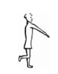

Rune Grimoire
Eiwaz
Modern Relevance
Eihwaz signifies the yew tree, sacred to the dead. It is a rune of remembrance, grieving, and connection to the spirit world. It reminds us that love endures through loss.
Tree, Element, and Deity
Tree: yew/poplar
Element: all
Deity: Ullr
Meaning: yew tree; regeneration, longevity
Names Across Dialects
| Dialect | Word | Meaning |
|---|---|---|
| Proto-Germanic | eihwaz / iwaz | Yew tree |
| Gothic | eihwas | Yew tree |
| Old English | éoh / eow | Yew tree / mountain ash |
| Old Norse | ihwar | Yew (runic inscriptions only; not in Younger row in this form, but the Norse Futhark has ýr: yew, bow of yew wood) |
| Norwegian | Eo | Yew |
Phonetic value: uncertain, somewhere between e and i. This rune stave is essentially a magickal sign that occurs infrequently in the writing of words.
Esoteric interpretation: yew as the tree of life and death, the World-Tree Yggdrasill
Ideographic interpretation: the vertical column of the multiversal tree
The Vertical Axis of the World
Eihwaz is the vertical axis of the world that defines the central column of Yggdrasill, the cosmic tree. The World-Tree of the ancient Norse was in most cases actually symbolized by a yew tree, not an ash as often supposed. This idea is supported by the old texts, which always refer to its evergreen quality and its needles (the yew is a conifer). An alternate name for the yew in Old Norse is barraskr (needle ash). The word Yggdrasill means either "Yggr's (Odin's) steed" or "yew-column." The former meaning is a direct reference to the shamanistic ritual in the Havamal. The gallows are often poetically described as the "horse of the hanged" in Old Norse.
This is the rite by which the initiate fares to Hel (realm of the dead) and thence to all Nine Worlds to gain their wisdom. This is accomplished along the vertical dimension of the multiverse. The rune defines this "numinous axis" that pierces through and connects the three realms of heaven, earth, and the underworld. A similar but distinct function is performed by Tiwaz. There the emphasis is on separation; here, on communication.
The Mystery of Life and Death
This rune contains the mystery of life and death, and mystically unifies them in its essence. The yew (Taxus baccata) contains an alkaloid toxin that affects the central nervous system. On warm days the yew emits a gaseous toxin that lingers in the shade of the tree and may cause hallucinations for an individual under its branches. The importance of this in understanding the shamanistic character of the Yggdrasill initiation should not be lost.
Besides its association with death, the yew tree is also a symbol of eternal life and endurance. This is because of its evergreen nature and because it is an extremely long-lived (up to two thousand years) and hardy tree with exceptionally hard wood. The yew is often found in the old church graveyards of Europe, former sites of Asatru temples. Eihwaz is a life-giving force and the mode by which that force is sustained.
The Bow God and Yew Magick
In the Younger row this rune is represented by ýr, sometimes meaning "bow made of yew wood." Bows were often fashioned from the hard, resilient yew wood, and there is a connection to the "Bow God" Ullr with the mystery of the yew. Ullr is the archaic death god who rules the season of Yule.
The yew is also a powerful stave of protection and banishing. Even today in certain parts of Germany the magickal saying Var den Eibm kann kein Zauber bleiben ("before the yews, no evil magick can remain") may be heard. A preserved runic talisman known as the stave of Britsum, carved in yew wood sometime between 500 and 650 CE, bears a Frisian inscription interpreted as: "Always carry this yew! Strength is contained in it!"
Rune Character
Used in necromancy (communicating with the dead). A rune of death and power over the dead. Eihwaz strengthens the will and can be used in past life regressions to gain knowledge and wisdom from prior lives. Represents the kundalini force. This rune shields the soul through all kinds of hardship. Like the planet Pluto, it is a rune of transformation through death and rebirth and rules over deep and powerful transformation on all levels.
Crystal Pairings
- Smoky Quartz is used with this rune. Both can be used to activate and raise the kundalini.
Keywords
- Vertical cosmic axis
- Numinous initiation
- Life/death
- Endurance
- Protection
Galdr
eihwaz eihwaz eihwaz
iwaz iwaz iwaz
iwu iwa iwi iwe iwo
iwo iwe iwi iwa iwu
Stadha
Stand upright and stretch both arms down at a 50-degree angle, while lifting the left (or right) leg back at an equal angle.

Magickal Workings
- Initiation into the wisdom of the World-Tree
- Realization of the death/life mystery and liberation from the fear of death
- Development of spiritual endurance and hard will
- Spiritual creativity and vision
- Protection from detrimental forces
- General increase in personal power
- Communication between levels of reality across the worlds of Yggdrasill
- Memories of former existences in the ancestral stream
- Necromancy (communicating with the dead)
- Past life regressions
- Activation and raising of the kundalini
Constructive Applications
Strengthens the will. Used in past life regressions to gain knowledge and wisdom from prior lives. Shields the soul through all kinds of hardship. Rules over deep and powerful transformation on all levels. Represents and activates the kundalini force.